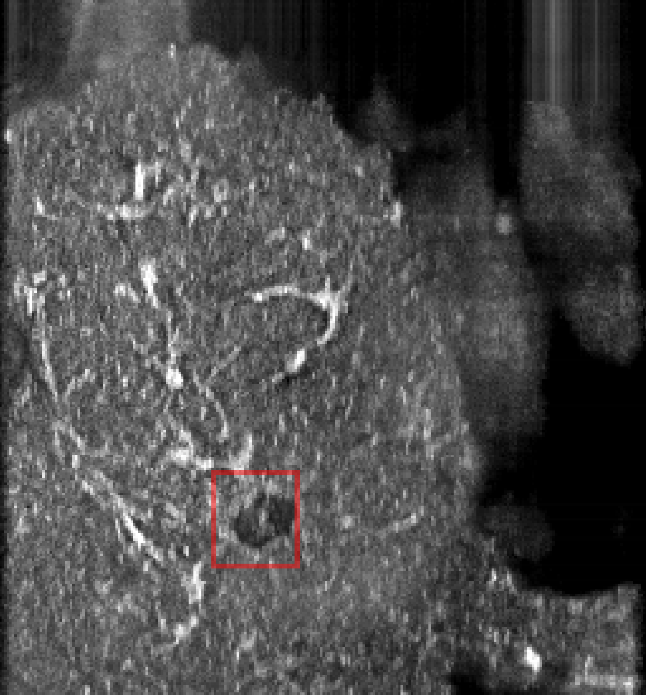

Breast cancer detection and diagnosis

Published Wed 06 September 2023
The application of computer-aided technology in medical imaging has made significant advancements, particularly in the field of breast cancer detection and diagnosis. Our research focuses on developing computer-aided systems for breast cancer detection and diagnosis using various medical imaging techniques such as X-ray, CT, MRI, and ultrasound.
Breast tumor recognition and classification have become a prominent area of research in computer-aided diagnosis (CAD). The key components of breast image classification include image pre-processing, feature extraction, feature selection, discrimination between benign and malignant tumors, and disease prediction modules. Feature extraction plays a crucial role in this process. Traditional machine learning methods that rely on hand-crafted features often lack robustness in accurately classifying benign and malignant breast tumors. In recent years, deep convolutional neural network (CNN) models have been proposed for object detection and classification tasks. CNN-based methods have shown great promise in extracting high-dimensional abstract features from ultrasound images, leading to high-performance analysis in breast cancer diagnosis. However, deep learning models typically require training on large datasets for improved generalization.
Collecting large datasets of medical images is challenging, particularly due to issues related to patient privacy. Additionally, the process of labeling medical ultrasound images adds to the workload of physicians. Our mission is clear: to enhance the accuracy of benign and malignant breast tumor detection and diagnosis using existing data by leveraging transformer and generative AI synthesized images.
By utilizing transformer models and generative AI techniques, we aim to improve the performance of breast cancer detection and diagnosis with limited available data. Transformer models have shown remarkable capabilities in capturing complex dependencies in data, while generative AI can generate synthetic images that augment the existing dataset. These synthesized images can help in training deep learning models to improve their generalization and performance.
Our research is driven by the goal of enhancing the accuracy of breast tumor detection and diagnosis, even when faced with limited data availability. By leveraging the power of transformer models and generative AI, we aim to develop robust computer-aided systems that can assist medical professionals in accurately identifying and classifying benign and malignant breast tumors.
Project leaders
XiangyuXiong
Partner Organisations
杭州市第一人民医院
Project Example



These pictures show the detection results of our breast cancer detection model in the ABUS data set, and the masses in the red border box are the breast masses detected by the model.